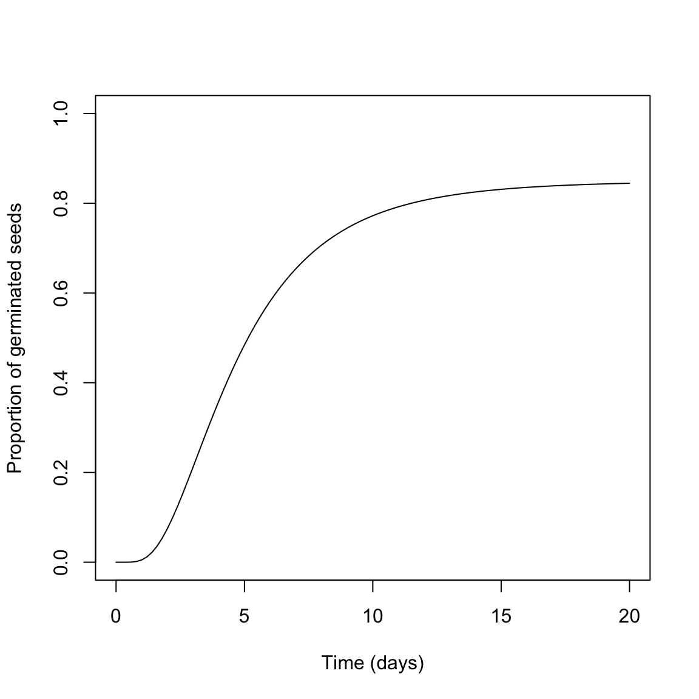
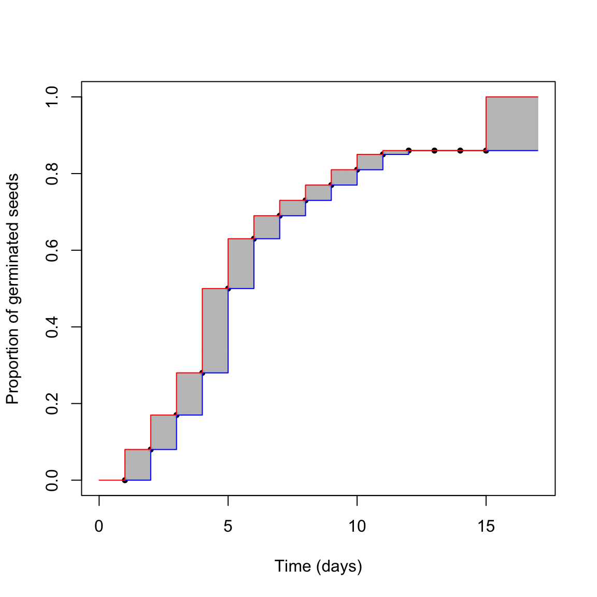

Seeds in a population do not germinate altogether in the same moment. This is an undisputed fact, resulting from the seed-to-seed variability in germination time (t). We could describe such a variability by using some density function \(\phi\), usually parameterised by way of a location (\(\mu\)) and scale (\(\sigma\)) parameter:
\[ t \sim \phi(\mu, \sigma)\]
However, we should also consider that there will often be a fraction of seeds that will not germinate in the given conditions, because it is either dormant or nonviable. Let’s call this fraction \(\pi\); the density distribution of germination times becomes:
\[ t \sim \pi \, \phi(\mu, \sigma) + (1 - \pi)\]
From there, the proportion of germinated seeds (G) at \(t = t_g\) is given by the corresponding cumulative distribution function:
\[ G = P(t < t_g) = \pi \, \Phi(\mu, \sigma)\]
Usually, \(\Phi\) is right-skewed and, therefore, log-normal, log-logistic or Weibull cumulative distribution functions have been succesfully used. The graph below represents the germination time-course for a seed population with lognormal distribution of germination times, \(\mu = 4.5\) days, \(\sigma = 0.6\) and a maximum germinated proportion \(\pi = 0.85\).

With a log-normal distribution, \(\mu\) corresponds to the time to 50% germination (for the germinated fraction), while \(\sigma\) is the standard deviation on a log-scale.
Considering the above, we can simulate the results of a germination assay. Let’s take a 100 seed sample from the population above. Obviously, this sample will not necessarily reflect the characteristics of the population. We can do this sampling in R, by using a three-steps approach. First, let’s simulate the number of germinated seeds, assuming a binomial distribution with \(\pi\) equal to 0.85:
#Monte Carlo simulation - Step 1
set.seed(1234)
nGerm <- rbinom(1, 100, pMax)
nGerm## [1] 89We see that in this instance 89 seeds germinated out of 100, which is not the expected 85%. This is a typical random fluctuation. Second, let’s simulate the germination times for these 89 seeds, by drawing from a log-normal distribution with the above parameters:
#Monte Carlo simulation - Step 2
Gtimes <- rlnorm(nGerm, log(mu), sigma)
Gtimes <- c(Gtimes, rep(Inf, 100 - nGerm))
Gtimes## [1] 5.424863 5.434125 5.582579 2.903142 4.597512 4.815609 10.603760
## [8] 8.118291 3.097525 2.901291 3.300505 1.574027 7.630397 10.237768
## [15] 1.635063 3.088284 4.549728 6.870408 3.052210 7.576004 5.637602
## [22] 5.420753 4.513539 4.399537 6.948064 3.340211 4.530872 4.526701
## [29] 6.760117 8.346274 1.594181 1.198977 6.233769 4.558227 4.961047
## [36] 9.479485 7.197573 4.631820 1.856768 5.844697 4.313697 4.810473
## [43] 9.661802 3.346942 9.584485 9.722689 2.299752 4.579095 1.412326
## [50] 6.645991 4.964877 2.740231 3.431359 2.289046 1.559058 2.091263
## [57] 2.235598 10.176567 3.167262 7.411185 10.289998 11.576995 3.191594
## [64] 4.522085 3.390061 5.527390 4.005285 4.286991 5.220449 8.824484
## [71] 16.204791 4.375652 5.469491 4.971624 5.054734 2.880597 8.386469
## [78] 17.489334 27.570654 4.890293 5.047498 2.859137 5.555705 1.878668
## [85] 3.429052 5.112954 4.029451 6.863120 4.933304 Inf Inf
## [92] Inf Inf Inf Inf Inf Inf Inf
## [99] Inf InfNow, we pile up the vector hosting 100 germination times (Gtimes). Please, note that we added 11 infinite germination times, to represent non-germinated seeds.
Unfortunately, the above dataset is not what we would actually observe during a germination assay. Indeed, we cannot observe the exact germination time for each single seed in the lot; we can only count the seeds which have germinated between two assessment times. As the third step, we simulate the observed counts, by assuming daily monitoring for 15 days.
obsT <- seq(1, 15, by=1) #Observation schedule
table( cut(Gtimes, breaks = c(0, obsT)) )##
## (0,1] (1,2] (2,3] (3,4] (4,5] (5,6] (6,7] (7,8] (8,9]
## 0 8 9 11 22 13 6 4 4
## (9,10] (10,11] (11,12] (12,13] (13,14] (14,15]
## 4 4 1 0 0 0We can see that, e.g., 8 germinated seeds were counted at day 2; therefore they germinated between day 1 and day 2 and their real germination time is unknown, but included in the range between 1 and 2 (left-open and right-closed). We say that this data is interval-censored; likewise, we talk about grouped-data, as the data come as groups of seeds with similar germination times.
We also see that 14 seeds were still ungerminated at the end of the assay. For this simulation excercise, we know that 11 seeds were non-germinable and three seeds were germinable, but were not allowed enough time to germinate (look at the table above: there are three seeds with germination times respectively equal to 16.2, 17.5 27.6 days). In real life, this is another source of uncertainty: we might be able to ascertain whether these 14 seeds are viable or not (e.g. by using a tetrazolium test), but, if they are viable, we would never be able to tell whether they are dormant or their germination time is simply longer than the duration of the assay. In real life, we can only reach an uncertain conclusion: the germination time of the 14 ungerminated seeds is comprised between 15 days to infinity; this sort of uncertainty is called right-censoring.
Let’s re-organise the data, so that they are amenable to further analyses.
counts <- as.numeric( table( cut(Gtimes, breaks = c(0, obsT)) ) )
df <- data.frame(timeBef = c(0, obsT), timeAf = c(obsT, Inf), counts = c(as.numeric(counts), 100 - sum(counts)), propCum = c(cumsum(counts), 100)/100)
df## timeBef timeAf counts propCum
## 1 0 1 0 0.00
## 2 1 2 8 0.08
## 3 2 3 9 0.17
## 4 3 4 11 0.28
## 5 4 5 22 0.50
## 6 5 6 13 0.63
## 7 6 7 6 0.69
## 8 7 8 4 0.73
## 9 8 9 4 0.77
## 10 9 10 4 0.81
## 11 10 11 4 0.85
## 12 11 12 1 0.86
## 13 12 13 0 0.86
## 14 13 14 0 0.86
## 15 14 15 0 0.86
## 16 15 Inf 14 1.00Now we can try to picture the situation in the graph below.
plot(propCum ~ timeAf, data = df, subset=c(is.finite(df$timeAf)==T), pch = 20,
xlab= "Time (days)", ylab = "Proportion of germinated seeds", xlim=c(0,17),
ylim = c(0, 1))
for(i in 2:15){
polygon(c(df$timeBef[i], df$timeAf[i], df$timeAf[i], df$timeBef[i]),
c( df$propCum[i-1], df$propCum[i-1], df$propCum[i], df$propCum[i] ),
density=100, col="grey", border=NA)
}
polygon(c(15, 17, 17, 15),
c(0.86, 0.86, 1, 1 ),
density=100, col="grey")
lines(c(propCum, 0.86) ~ c(timeAf, 17), type="s", data = df,
col="blue", subset=is.finite(timeAf)==T)
lines(c(propCum, 1) ~ c(timeBef, 17), type="s", data = df,
col="red")
What is the real germination time-course? The red one? The blue one? Something in between? We cannot say this from our dataset. The first conclusion is that censoring creates a certain amount of uncertainty, that should never be neglected. Such an uncertainty is due to the monitoring schedule, which prevents us from observing the actual germination moment for each seed in the sample. It is peculiar to most time-to-event studies and it is additional to the other sources of uncertainty, for example those relating to sampling variability and possible errors in the manipulation of seeds and Petri dishes.
The consequences of ignoring censoring may be of different severity. We’ll make two examples.
The Mean Germination Time (MGT) has been often used to measure the speed of germination for the germinated fraction, by using the following equation:
\[ MGT = \frac{\sum_{i=1}^{k} n_it_i}{\sum_{i=1}^{k} n_i} \]
where \(t_i\) is the time of the \(i-th\) assessment, \(n_i\) is the count of germinated seeds between \(t_{i - 1}\) and \(t_{i}\) and \(k\) is the total number of assessments. The above formula does not consider censoring and it assigns to all seeds in each interval the same germination time, i.e. the exact time when they were scored as germinated.
Please note that the use of MGT has beem also criticised formula in Ranal and Santana (2006) , we end up with an overestimation. Indeed, the mean germination time for the log-normal distribution where we took our sample from is:
\[ MGT = exp\left( \mu + \frac{\sigma^2}{2} \right) \]
that is 5.3874781. We can get an estimate from our sample by using the formula in Ranal and Santana (2006), as implemented in the ‘germinationmetrics’ package (Aravind et al., 2018):
timings <- df$timeAf[is.finite(df$timeAf) == T]
counts <- df$counts[is.finite(df$timeAf) == T]
germinationmetrics::MeanGermTime(counts, timings)## [1] 5.593023We see that our estimate is higher than the real value. In itself, this means nothing. However, let’s repeat the sampling 1000 times:
GermSampling <- function(nSeeds, timeLast, stepOss, mu, shape, pMax){
#Draw a sample as above
germ <- rbinom(1, nSeeds, pMax)
Gtimes <- rlnorm(nGerm, log(mu), sigma)
Gtimes <- c(Gtimes, rep(Inf, 100 - nGerm))
#Generate the observed data
obsT <- seq(1, timeLast, by=stepOss) #Observation schedule (by 5 o 2)
counts <- as.numeric( table( cut(Gtimes, breaks = c(0, obsT)) ) )
#Calculate the MGT
MGT <- germinationmetrics::MeanGermTime(germ.counts = counts,
intervals = obsT)
return(MGT)
}
set.seed(1234)
result <- c()
for (i in 1:1000) {
res <- GermSampling(100, 15, 1, 4.5, 0.6, 0.85)
result <- c(result, res)
}
mean(result)## [1] 5.565812The bias is approximately 3%. Not much, but if we use a lower number of seeds and a looser monitoring schedule, the bias may increase remarkably (up to 19%):
set.seed(1234)
result <- c()
for (i in 1:1000) {
res <- GermSampling(25, 15, 3, 4.5, 0.6, 0.85)
result <- c(result, res)
}
mean(result)## [1] 6.420816Clearly, the MGT is not a good estimator of the mean germination time for the germinated fraction.
In other instances, the consequences of ignoring censoring may be less dangerous (but still important). For example, the Time to 50% germination (T50) is used as another measure of germination velocity, which is favoured over MGT when we need to compare seed lots with different germination capability. For a log-normal distribution, the T50 can be obtained by using the quantile function:
qlnorm(0.5 / pMax, log(mu), sigma)## [1] 5.144263This is the real time to 50% germination. In order to get an estimate from our sample, nonlinear regression is often recommended. In this case, the observed counts are transformed into cumulative proportions and used as the response variable, while the observation time is used as the independent variable.
The following code fits a log-normal cumulative distribution function to the observed data, by using the ‘drm’ function, in the ‘drc’ package (Ritz et al., 2015). The T50 is retreived by using the ED function and passing the model object as an argument.
library(drc)
mod <- drm(propCum ~ timeAf, data = df,
subset = c(is.finite(timeAf) == T),
fct = LN.3() )
ED(mod, 0.5, type = "absolute")##
## Estimated effective doses
##
## Estimate Std. Error
## e:1:0.5 5.14564 0.12519We see that our estimate is very close to the real value. However, let’s how our estimator behave in the long run. The following code uses Monte Carlo simulation to extract 1000 samples, fit the log-normal cumulative distribution function model and retreive 1000 estimates, together with Standard Errors (SEs).
GermSampling <- function(nSeeds, timeLast, stepOss, mu, shape, pMax){
#Draw a sample as above
nGerm <- rbinom(1, nSeeds, pMax)
Gtimes <- rlnorm(nGerm, log(mu), sigma)
Gtimes <- c(Gtimes, rep(Inf, 100 - nGerm))
#Generate the observed data
obsT <- seq(1, timeLast, by=stepOss) #Observation schedule (by 5 o 2)
counts <- as.numeric( table( cut(Gtimes, breaks = c(0, obsT)) ) )
propCum <- cumsum(counts)/nSeeds
#Calculate the T50
mod <- drm(propCum ~ obsT, fct = LN.3() )
T50 <- ED(mod, 0.5, type = "absolute", display = F)
c(T50 = T50[1,1], ES = T50[1,2])
}
set.seed(1234)
result <- data.frame()
for (i in 1:1000) {
res <- GermSampling(100, 15, 1, 4.5, 0.6, 0.85)
result <- rbind(result, res)
}
names(result) <- c("T50", "ES")
head(result)## T50 ES
## 1 5.145639 0.12518627
## 2 5.113493 0.12240291
## 3 6.083023 0.18811890
## 4 5.439515 0.13551344
## 5 5.138722 0.06643969
## 6 5.623690 0.18784672apply(result, 2, mean)## T50 ES
## 5.160235 0.125364apply(result, 2, sd)## T50 ES
## 0.41979820 0.05778375We see that the estimates, on average, are very close to the real value. However, standard errors are, on average, 0.125 days, However, the Monte Carlo standard deviation is approximately 0.420 days, which tells us that standard errors from nonlinear regression are strongly underestimated.
Censoring is peculiar to germination assays and other time-to-event studies. It may have a strong impact on the reliability of our estimates and standard errors and, therefore, it should never be neglected.
Aravind, J., Devi, S.V., Radhamani, J., Jacob, S.R., Srinivasan, K., 2018. The germinationmetrics package: A brief introduction 35.
Ranal, M.A., Santana, D.G.D., 2006. How and why to measure the germination process? Revista Brasileira de Botanica 29, 1–11.
Ritz, C., Baty, F., Streibig, J.C., Gerhard, D., 2015. Dose-response analysis using r. PLOS ONE 10.